Trang chủ / Chuyên đề 10: Lịch Sử Bị Che Giấu & Nền Văn Minh Cổ Đại / Kỳ 91
Chuyên đề 10 · Kỳ 91 / 100
LỤC ĐỊA LEMURIA (MU) & NỀN VĂN MINH TÂM THỨC 5D NGUYÊN THỦY

1. Sự Hình Thành Lục Địa Mu Và Chủng Tộc Khởi Nguyên Alithir
| Tiêu Chí So Sánh | Chủng Tộc Khởi Nguyên Alithir (Lemuria) | Con Người Vật Lý 3D Hiện Đại |
|---|---|---|
| Thể Xác & Mật Độ | Thể dĩ thái - tinh thể bán trong suốt, chiều cao 2,5m - 3,5m | Thể xác gốc Carbon thô nặng, chiều cao 1,6m - 1,8m |
| Dải Tần Nhận Thức | Mật độ 5D thuần khiết, tâm thức vô hướng | Mật độ 3D giới hạn, bị khóa trong 5 giác quan thô |
| Giao Tiếp & Ngôn Ngữ | Thần giao cách cảm ba chiều, ngôn ngữ biểu thanh Solfeggio | Ngôn ngữ phát âm tuyến tính qua thanh quản |
| Liên Kết Môi Trường | Hòa hợp tuyệt đối với Nước và Nhịp đập Schumann Gaia | Khai thác tài nguyên, gây ô nhiễm và phân tách tự nhiên |
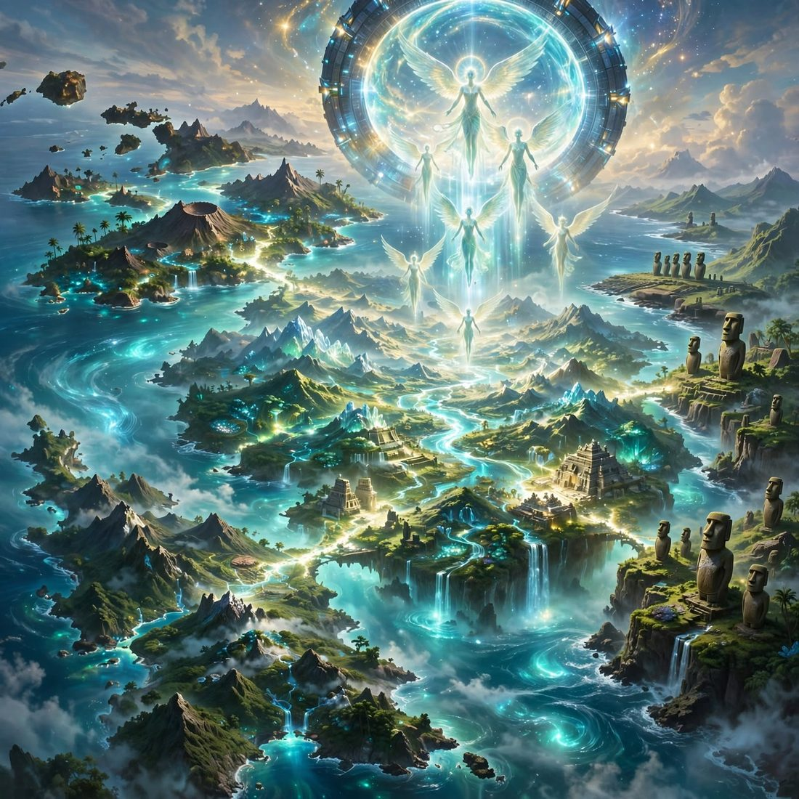
Trong lịch sử cổ đại bị xóa xăm của Trái Đất, rất lâu trước khi các đế chế vật lý thô 3D ra đời và trước khi các trang sách giáo khoa niên đại học hiện đại định hình, hành tinh Gaia đã từng ngự trị một siêu lục địa huyền thoại trải rộng trên toàn bộ khu vực Thái Bình Dương. Nền văn minh này được biết đến trong các văn bản giải mật và tri thức thiên hà dưới hai tên gọi cổ xưa: Lục địa Mu hay Văn minh Lemuria.
Theo các tài liệu tổng hợp từ công trình của Matias De Stefano, Elena Danaan, Alex Collier cùng các thông điệp truyền thông từ hệ sao Taygeta (Pleiades), địa lý của Trái Đất hàng chục ngàn năm trước hoàn toàn khác biệt so với bản đồ hiện đại. Lục địa Mu từng là một thảm đại địa chất khổng lồ nối liền các quần đảo giữa Thái Bình Dương — kéo dài từ Hawaii ở phía Bắc, vươn sang New Zealand ở phía Tây, trải rộng tới Đảo Phục Sinh ở phía Đông, và chạm đến dải bờ biển phía Tây của Châu Mỹ, Nhật Bản cùng khu vực Đông Nam Á và Châu Đại Dương.
Sự xuất hiện của văn minh Lemuria gắn liền với sự hạ sơn của chủng tộc khởi nguyên được gọi là Alithir (hay "Angels of the Sea" — Thiên thần của Đại Dương). Khoảng 50.000 năm trước, khi bầu khí quyển và trường năng lượng của Gaia chưa bị đốn hạ xuống dải Ma trận 3D nặng nề, dải tần số của Trái Đất còn ở trạng thái dĩ thái dẻo dai. Chủng tộc Alithir không di chuyển bằng các con tàu cơ khí kim loại thô, mà họ hạ nhập xuống Trái Đất dưới dạng các luồng tâm thức quang thể (etheric consciousness forms) đi qua các Cổng Sao năng lượng tự nhiên của Thái Bình Dương.
Chủng tộc Alithir định cư tại trung tâm Thái Bình Dương, nơi có chấn điểm từ trường mạnh mẽ nhất hành tinh. Sứ mệnh tối cao của người Alithir tại Lemuria không phải là xây dựng các đô thị bê tông hay xưng hùng xưng bá lãnh thổ, mà là làm việc với Ma trận Nước của Trái Đất để giữ vững dải tần số hòa hợp, biến Gaia thành một Thư viện Sống (Living Library) cho toàn thể Đa vũ trụ.
2. Cấu Trúc Nhận Thức 5D Vô Hướng & Lối Sống Cộng Hưởng Với Gaia
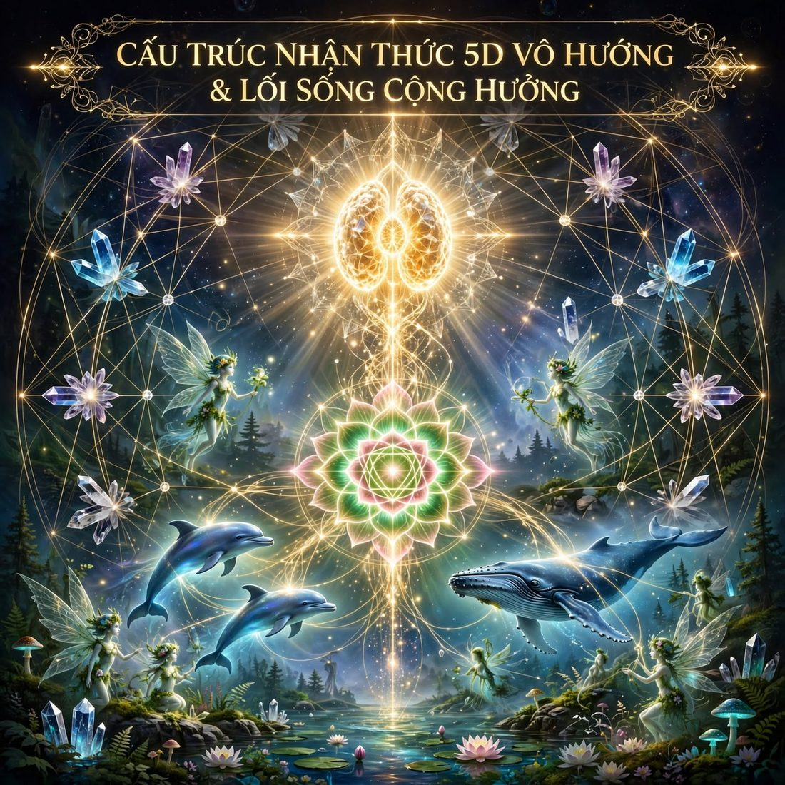
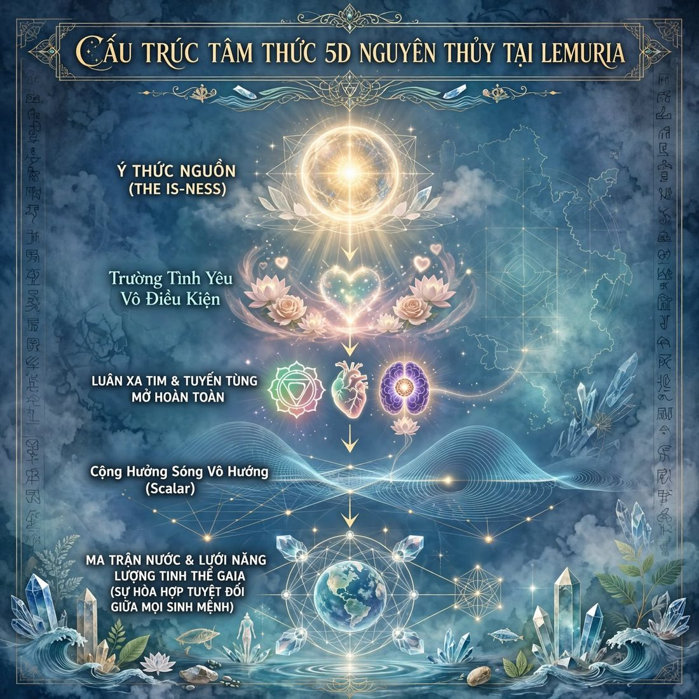
Khác biệt cốt lõi khiến nền văn minh Lemuria trở thành "Kỷ Nguyên Vàng" trong ký ức di truyền con người chính là cấu trúc Tâm Thức 5D Nguyên Thủy. Ở dải mật độ 5D, vật chất không phải là một chiếc lồng giam cứng nhắc, mà chỉ là một công cụ linh hoạt phản chiếu trạng thái ý niệm của linh hồn.
Trong xã hội Lemuria, những khái niệm của Ma trận 3D như tiền tệ, chiến tranh, chính phủ cai trị gian dối, hay sở hữu tư hữu hoàn toàn không tồn tại. Mọi cư dân Lemuria sống trong trạng thái nhận thức thống nhất (Unity Consciousness):
- Tự Do Khỏi Ảo Tưởng Tách Biệt: Người Lemuria nhận biết trọn vẹn rằng mỗi suy nghĩ, cảm xúc và hành động của cá nhân ngay lập tức gợn sóng tác động đến toàn bộ trường năng lượng tập thể. Sự dối trá hoàn toàn bất khả thi vì Tuyến Tùng và Luân xa Tim của tất cả sinh mệnh đều xoay mở 100%, bộc lộ suy nghĩ như một luồng ánh sáng trong suốt.
- Tôn Trọng Sự Sống Tối Cao: Không có sự phân biệt cấp bậc giữa con người với vương quốc động vật, thực vật hay khoáng vật. Người Lemuria giao tiếp thần giao cách cảm tự nhiên với cá heo, cá voi siêu chiều (Cetaceans), cây cối và các tinh linh thiên nhiên (Elemental Beings).
- Trí Tuệ Tập Thể (Collective Memory Field): Tri thức không bị giấu giếm trong sách giấy hay máy tính cá nhân, mà được lưu trữ trực tiếp trên Trường Rung Động Tập Thể của lục địa. Bất kỳ ai cần tìm hiểu về một lĩnh vực nào đó chỉ cần định tâm tại Luân xa Tim để "tải" trọn vẹn gói dữ liệu tri thức đó về Tuyến Tùng trong một khoảnh khắc.
Sống tại Lemuria nghĩa là nhận biết rằng mỗi suy nghĩ đều tạo ra hình thái năng lượng, mỗi hành động là một sự mở rộng của tinh thần, và mọi vật chất đều là sự biểu hiện của năng lượng Nguồn. Sự hòa hợp giữa con người và Mẹ Trái Đất Gaia không phải là một lý tưởng xa xăm, mà là trải nghiệm thực tế hằng ngày.
3. Công Nghệ Âm Học, Hình Học Thiêng Liêng Và Kiến Trúc Tinh Thể Sống
| Dạng Cấu Trúc Năng Lượng | Cơ Chế Vận Hành Sinh Học | Tác Động Tới Môi Trường & Tâm Thức |
|---|---|---|
| Vòm Tinh Thể Thạch Anh | Khuếch đại sóng vô hướng (Scalar Waves) từ tâm Gaia | Tạo ra trường năng lượng tự chữa lành tế bào, ngăn ngừa lão hóa |
| Mạng Lưới Tháp Âm Học | Phát ra tần số 432 Hz & 528 Hz liên tục | Đồng bộ hóa nhịp đập sinh học của con người với nhịp Schumann |
| Cổng Sao Địa Từ Thái Bình Dương | Nối liền 4 nút mạng lưới sa mạc toàn cầu | Cho phép du hành liên chiều và tiếp nhận nguồn photon vũ trụ |
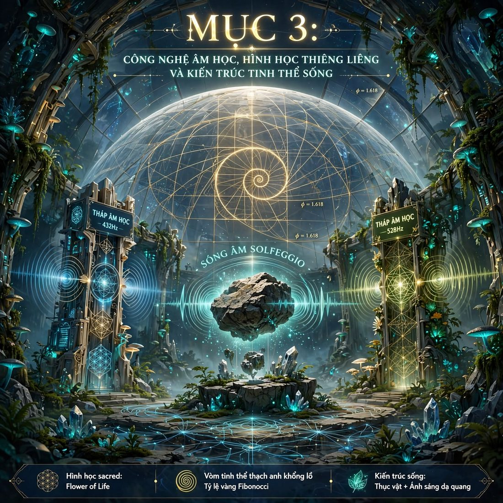
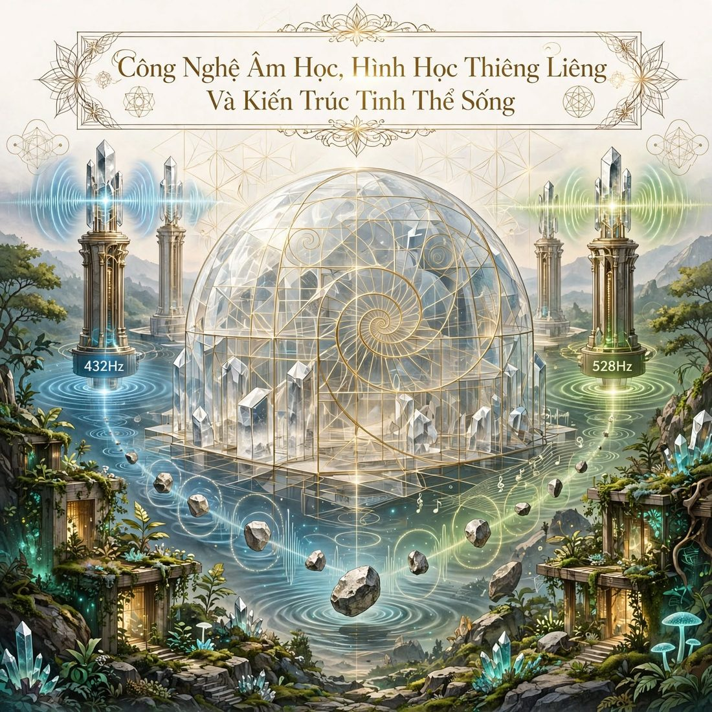
Một trong những hiểu lầm phổ biến của khoa học 3D là đánh đồng "không có công nghệ máy móc kim loại" với "lạc hậu, dã man". Văn minh Lemuria sở hữu một nền Khoa Học Tần Số Lượng Tử vượt xa mọi công nghệ công nghiệp hiện đại của thế giới 3D. Thay vì tàn phá lòng đất để khai thác than đá, dầu mỏ hay quặng kim loại thô, người Lemuria sử dụng hai nguồn nhiên liệu vĩnh cửu của Vũ trụ: Tần Số Âm Thanh (Acoustic Harmonics) và Hình Học Thiêng Liêng (Sacred Geometry).
Kỹ thuật nâng hạ và định hình bằng sóng âm. Các công trình đền thờ và trung tâm cộng hưởng năng lượng tại Lemuria không được xây dựng bằng cần cẩu hay chất nổ. Các tư tế và kỹ sư Lemuria sử dụng các dải tần số âm thanh Solfeggio kết hợp với sự định tâm của Luân xa Tim để vô hiệu hóa lực hấp dẫn vật lý. Họ đưa các khối đá thạch anh khổng lồ nặng hàng trăm tấn vào trạng thái lơ lửng (Levitation), sau đó dùng tần số âm thanh để cắt gọt và lắp ghép chúng với độ chính xác tuyệt đối ở mức vi mô.
Cấu trúc đô thị vòm tinh thể & thực vật sống. Người Lemuria không sống trong các hộp bê tông vuông vức triệt tiêu sinh khí. Kiến trúc Lemuria dựa trên cấu trúc Khối Lục Giác, Hình Cầu và Tỷ Lệ Vàng (Fibonacci). Họ dẫn truyền năng lượng qua các vòm tinh thể thạch anh (Crystal Domes) và kết hợp với mã gen thực vật để "trồng" nên các không gian sống tự nhiên. Các tòa nhà tinh thể có khả năng tự điều hòa nhiệt độ, tự phát ra ánh sáng dạ quang dịu mát vào ban đêm và liên tục lọc sạch trường năng lượng xung quanh.
4. Vai Trò Cố Vấn Của Arcturus Và Sirius Tại Lemuria
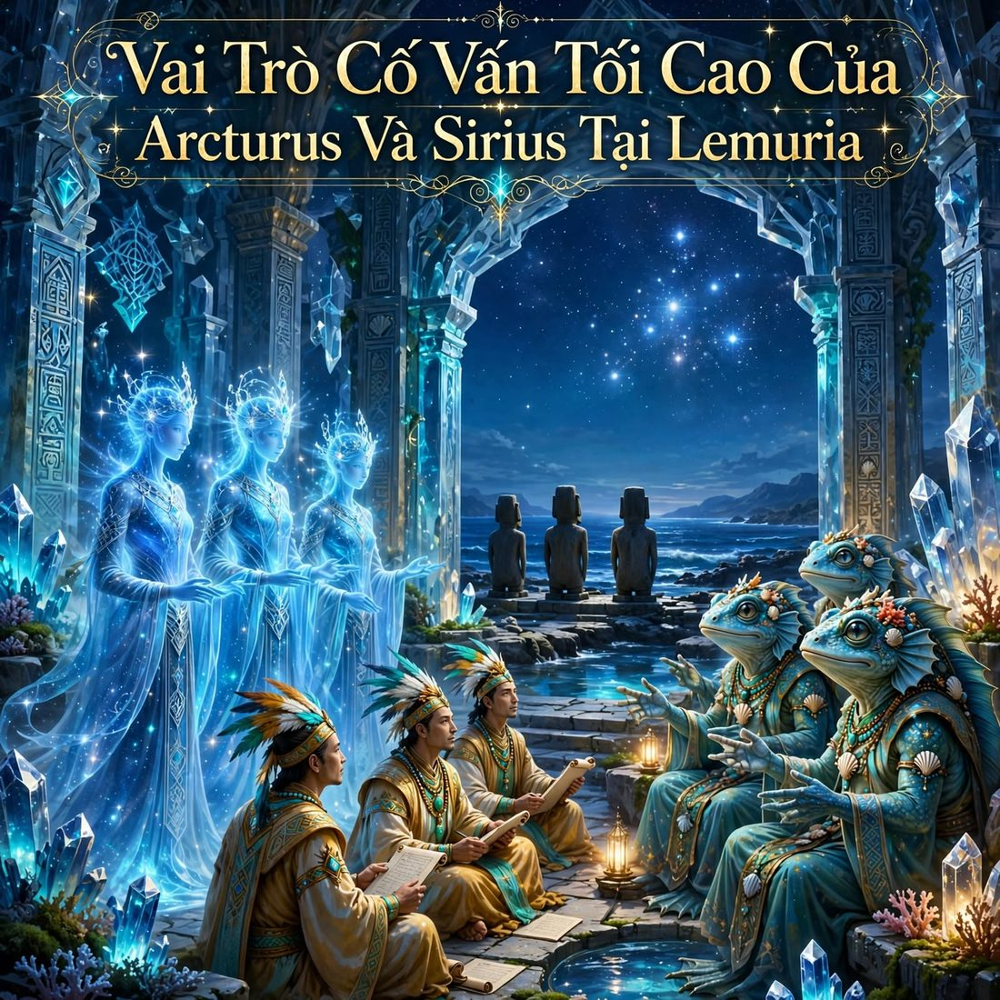
Nền văn minh Lemuria không phát triển cô lập. Trong suốt hàng chục ngàn năm hưng thịnh, Lemuria đóng vai trò là một "Đại sứ quan Thiên hà" trên Trái Đất, nhận được sự bảo trợ và cố vấn trực tiếp từ các chủng tộc ánh sáng tiến hóa cao trong Ngân Hà, đặc biệt là người Arcturus và người Sirius.
Chủng tộc Arcturus (Ohorai / Glaidean) — Bậc thầy chữa lành 6D. Theo các tài liệu từ Lăng Kính Lyra và Elena Danaan, các sinh mệnh Arcturus ngự trị ở dải mật độ 6D–9D đã đồng ý gián tiếp hạ bớt tần số dĩ thái để tương tác trực tiếp với cư dân Lemuria. Người Arcturus truyền dạy cho các tư tế Lemuria kỹ thuật chữa lành tổn thương thể phách bằng Buồng Tinh Thể Ánh Sáng (Healing Crystal Chambers). Sự tương tác này sâu sắc đến mức ký ức về người Arcturus được lưu giữ qua nhiều thế hệ. Các pho tượng đá Moai khổng lồ trên Đảo Phục Sinh chính là công trình do hậu duệ Lemuria dựng nên, ngoảnh mặt ra đại dương để ghi nhớ và chờ đón sự trở lại của các vị thầy Arcturus từ tầng trời.
Chủng tộc Sirius (Katayy & Nommo) — Kỹ sư lưới năng lượng Kundalini. Chủng tộc Sirius A (Katayy) và các sinh mệnh lưỡng cư Nommo từ Sirius C đóng vai trò là những kỹ sư di truyền và địa từ học cho Lemuria. Người Sirius giúp cư dân Lemuria thiết lập mạng lưới Lưới Năng Lượng Tinh Thể Gaia (Crystalline Grid), nối liền các đường kinh mạch địa chất (Ley Lines) để luân chuyển dòng năng lượng Kundalini của Trái Đất. Họ truyền dạy tri thức về ma trận nước, kỹ thuật kết nối tâm thức với các sinh mệnh đại dương (Cá Voi và Cá Heo 5D), tạo nên sự cân bằng sinh thái hoàn hảo cho lục địa Mu.
5. Cuộc Di Cư Xuống Agartha Và Di Sản Ký Ức Tế Bào
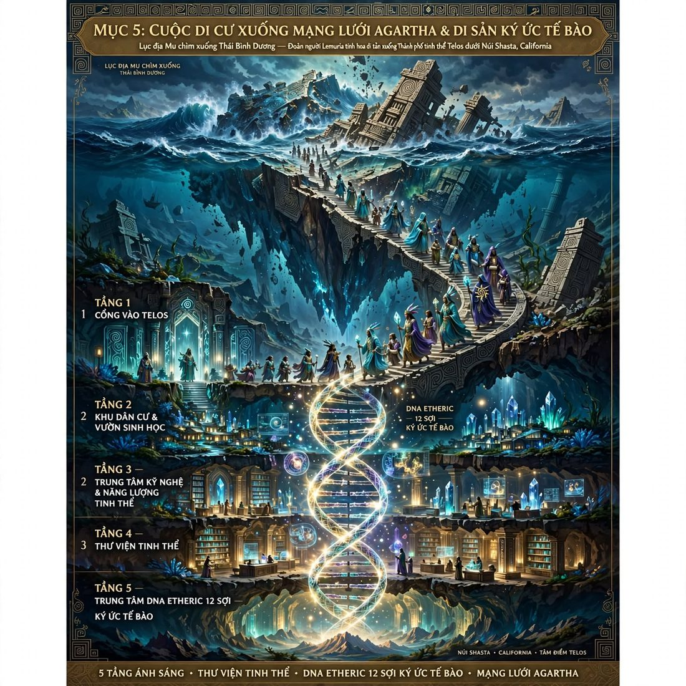
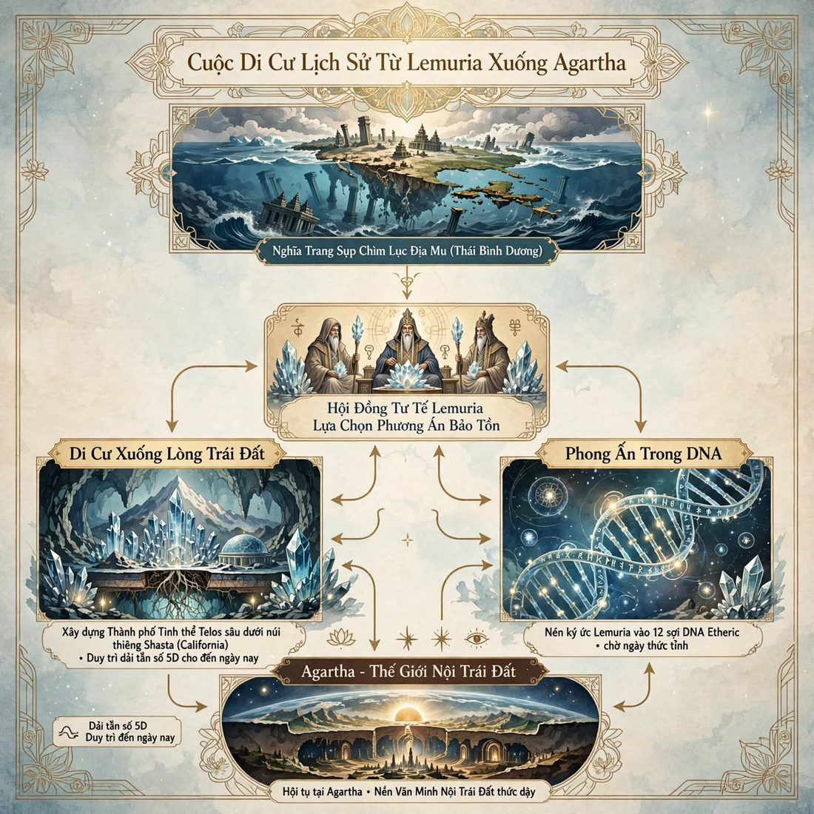
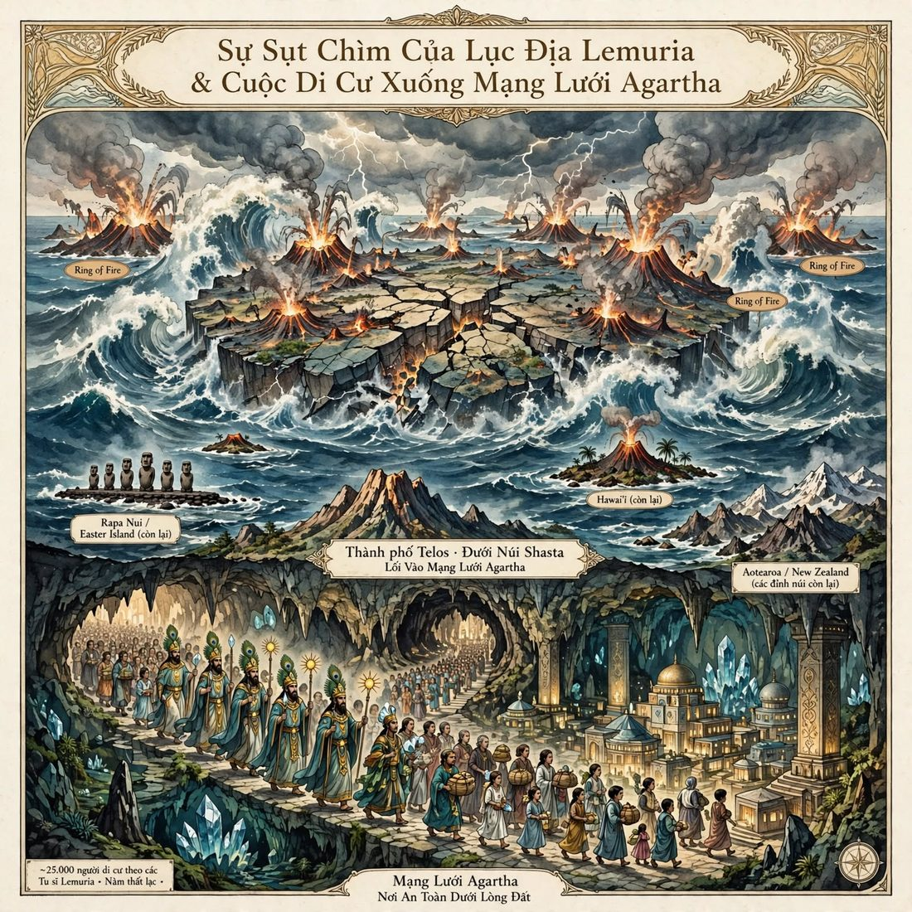
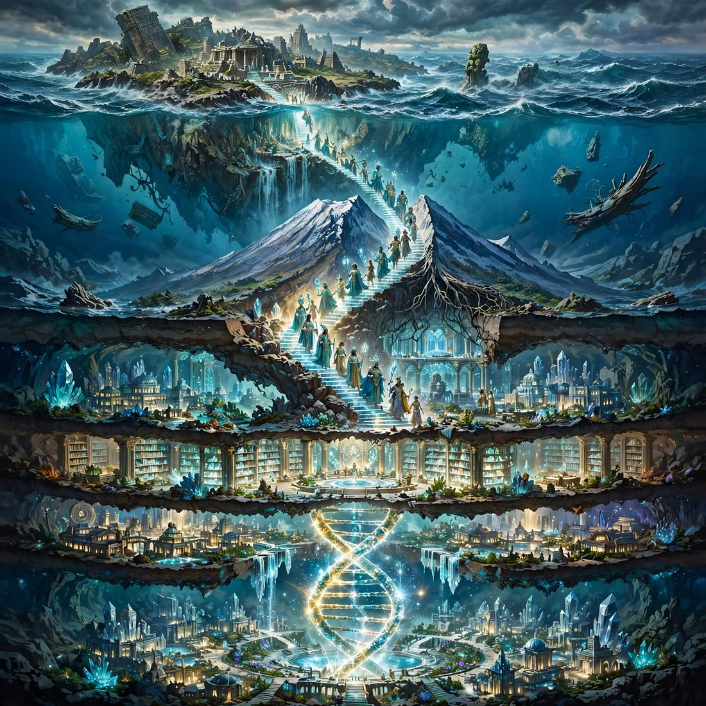
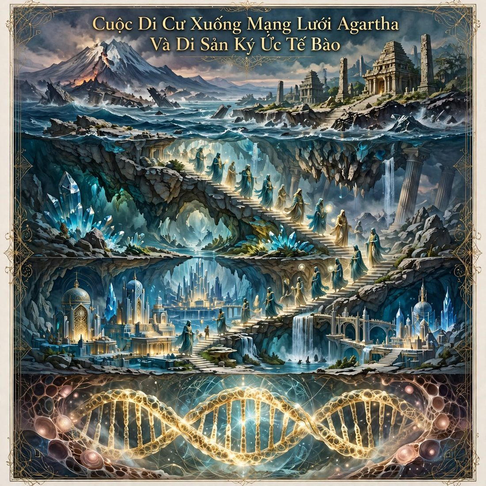
Thời kỳ hoàng kim của Lemuria bắt đầu đối mặt với những thử thách lớn khi nền văn minh Atlantis vươn lên ở khu vực Bắc Đại Tây Dương. Trong khi Lemuria kiên định giữ vững lối sống tâm thức hòa hợp 5D, Atlantis bắt đầu đi theo con đường phát triển công nghệ kỹ thuật thô, vũ khí hóa Tinh thể Mẹ và khao khát bành trướng quyền lực.
Khi các cuộc xung đột tần số giữa phe tha hóa Atlantis (Hội nhóm Belial) và Lemuria bùng nổ, kết hợp với sự biến dạng địa chất do lạm dụng năng lượng lõi Trái Đất, các tư tế Lemuria nhờ khả năng thấu thị tiên tri đã biết trước thảm họa diệt vong của lục địa Mu.
Thành phố tinh thể Telos dưới núi Shasta. Khoảng 25.000 cư dân Lemuria tinh hoa cùng toàn bộ bộ sưu tập thư viện tri thức tinh thể đã chủ động di tản xuống hệ thống hang động ngầm khổng lồ bên dưới ngọn núi lửa ngắt hoạt động Shasta (California, Mỹ). Họ kiến tạo nên Thành phố ngầm Telos — một đô thị vòm tinh thể 5 tầng khổng lồ thuộc Mạng lưới Agartha. Tại Telos, cư dân Lemuria tiếp tục duy trì lối sống 5D, sử dụng nguồn sáng từ trường nội thể, hoàn toàn không có bệnh tật hay lão hóa, và đóng vai trò giữ gìn "ngọn lửa tần số" cho Trái Đất.
Di sản ký ức tế bào trong bộ gen con người hiện đại. Dù lục địa Mu vật lý đã chìm sâu xuống đáy Thái Bình Dương cách đây hàng chục ngàn năm, di sản của Lemuria không bao giờ mất đi. Nó được nén lại dưới dạng Ký Ức Tế Bào (Cellular Memory) trong 10 sợi DNA etheric của loài người Trái Đất. Ngày nay, khi Trái Đất bước vào dải năng lượng Photon tần số cao để thăng lên 5D, hàng triệu người trên thế giới đang trải nghiệm sự thức tỉnh ký ức Lemuria: niềm khao khát thiên nhiên mãnh liệt, tình yêu sâu sắc với đại dương, sự nhạy cảm với âm thanh chữa lành và khả năng thấu cảm tự nhiên. Tần số Lemuria chính là "chất xúc tác mềm" giúp xoa dịu các căng thẳng của Ma trận 3D, hướng con người trở về với sự từ bi, tử tế và lòng biết ơn đối với Mẹ Trái Đất Gaia.
6. Kết Luận: Thức Tỉnh Tần Số Lemuria Trong Tiến Trình Hoàn Lương 5D
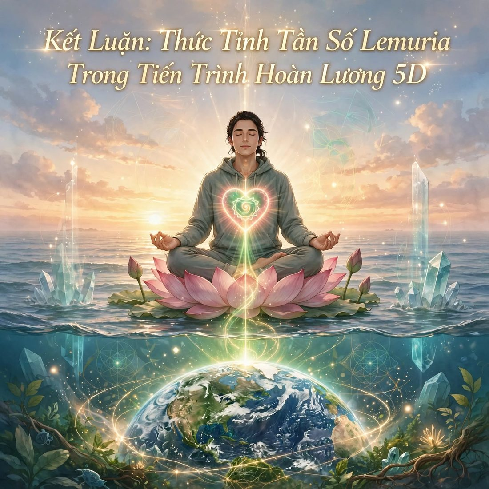
Hành trình tìm hiểu về Lục địa Lemuria (Mu) và Nền Văn Minh Tâm Thức 5D Nguyên Thủy không phải là một bài tập hoài cổ vô ích, mà là chìa khóa nhận thức sống còn cho nhân loại hiện đại. Bài học từ Lemuria nhắc nhở chúng ta rằng:
- Một nền văn minh chân chính không được đo lường bằng số lượng vũ khí hay sự chọc trời của các tòa nhà bê tông, mà được đo bằng Mức Độ Hòa Hợp Giữa Tâm Thức Con Người Với Vũ Trụ.
- Sức mạnh tối cao không nằm ở sự kiểm soát hay thống trị ngoại vi, mà nằm ở Tình Yêu Vô Điều Kiện Từ Luân Xa Tim.
Hãy mở rộng trái tim, lắng nghe tiếng gọi từ đại dương khởi nguyên và tự tin đánh thức tần số Lemuria bên trong bạn. Bạn chính là chiếc cầu nối ánh sáng đưa Kỷ Nguyên Vàng trở lại trên Quê hương Gaia.